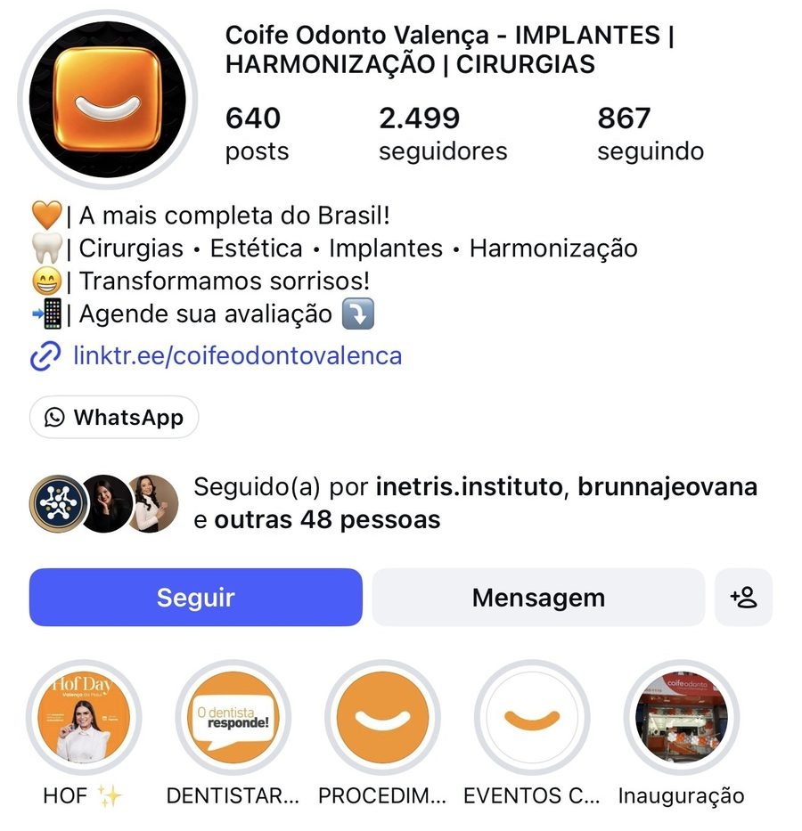
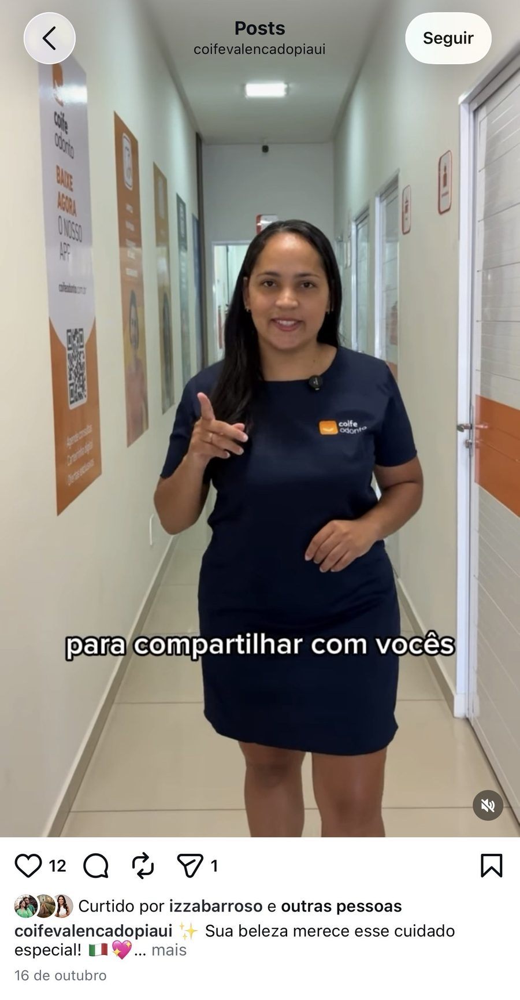
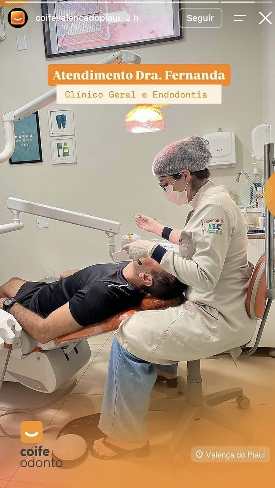
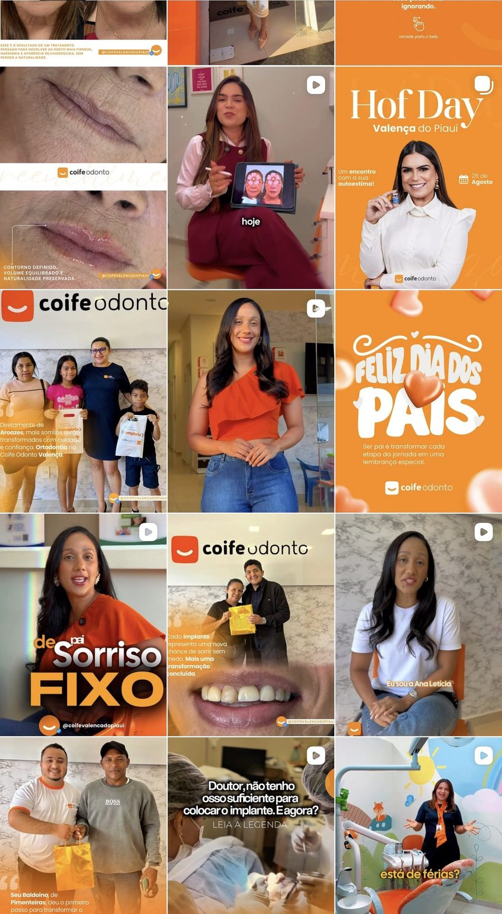

Quem somos
Vídeo de apresentação: a clínica em Valença, a estrutura, a equipe e o propósito.
Formato: Reel com a equipe
Diagnóstico e proposta
Coife Odonto Valença do Piauí
O que percebemos, o que já pode ser feito e como o INETRIS pode estruturar o marketing da clínica.
O que analisamos no perfil @coifevalencadopiaui (11/11/2026):

Retrato do perfil no dia da análise

Bio, nome do perfil e destaques

Implantes, harmonização e cirurgias aparecem logo na busca.
O caminho para falar com a clínica existe.
Quem chega não entende em 3 segundos quem são, o que fazem e o que vendem.
Genérico, sem prova, e pode esbarrar nas regras de publicidade do CFO.
Valença do Piauí e região não aparecem como força da clínica.
Capas diferentes e nomes cortados: “DENTISTAR...”, “PROCEDIM...”, “EVENTOS C...”.
Algoritmo e paciente esquecem quem não aparece
Não há linha editorial nem dias fixos de postagem.
“Sua beleza merece esse cuidado especial!”: não diz o tratamento nem convida a agendar.
12 curtidas para 2.499 seguidores: o conteúdo não está chegando, ou não está gerando conversa.

Os dois stories mais recentes, em sequência


Não há storytelling. É como se as informações fossem jogadas, uma depois da outra, e isso não é vendável.
A arte bege e dourada é da Dra. Doris; a clínica não colocou moldura, contexto nem chamada própria.
O atendimento da Dra. Fernanda informa, mas não convida o paciente a agendar.
Duas profissionais aparecem em sequência e o seguidor não percebe que a Coife reúne várias especialidades.
O que já existe e pode ser potencializado

Reconhecível em todo o feed.
Ana Letícia, Doris e a equipe humanizam a marca.
Aroazes e Pimenteiras: prova de alcance regional.
“Doutor, não tenho osso suficiente para o implante?”
A bio vende implantes primeiro; o feed recente fala de HOF.
Falta autoridade clínica: quem é o especialista de cada tratamento.
Posts terminam sem dizer o próximo passo.
Ocupam espaço sem gerar conversa nem agendamento.
Ajustes simples, sem custo, que mudam a percepção do perfil
Em 3 segundos, o seguidor precisa entender quem são, o que fazem e como agendar
Vídeo de apresentação: a clínica em Valença, a estrutura, a equipe e o propósito.
Formato: Reel com a equipe
Carrossel com as especialidades: implantes, harmonização, cirurgias, ortodontia, clínico geral.
Formato: Carrossel
Depoimento real de paciente e o passo a passo para marcar a avaliação.
Formato: Depoimento + CTA
Exemplo aplicado à agenda de HOF da Dra. Doris (23, 24 e 25/11)
“Seu rosto parece cansado mesmo depois de dormir bem?”
Olheiras, linhas e perda de firmeza têm tratamento.
Dra. Doris atende na Coife: quem é e o que faz.
Resultado de paciente, com autorização e dentro das regras do CFO.
“Agenda de 23 a 25/11. Toque em Agendamentos.”
Repost de parceiros entra dentro dessa sequência, nunca solto. Uma sequência de venda por semana; nos outros dias, rotina e bastidores.
Podem ser feitos ainda esta semana
Sugestão de bio
Clínica odontológica em Valença do Piauí
Implantes • Harmonização • Cirurgias • Ortodontia
Especialistas que cuidam do seu sorriso do início ao fim
Agende sua avaliação pelo link abaixo
Local, específica e com chamada. Sai a frase “A mais completa do Brasil!”.
Capas laranja iguais e nomes curtos: Implantes, HOF, Ortodontia, Equipe, Depoimentos, Agende.
Série “Quem cuida de você”: rosto, especialidade e dias de atendimento.
Terminar com: “Agende sua avaliação pelo link da bio”.
Seguir pacientes, parceiros e empresas locais; deixar de seguir o que não agrega.
3 posts por semana no feed e stories todos os dias
| Dia | Linha de conteúdo | Exemplo |
|---|---|---|
| Segunda | Educativo | Dúvida frequente respondida pelo dentista |
| Quarta | Pessoas e bastidores | Especialista da semana, equipe, estrutura da clínica |
| Sexta | Prova | Depoimento, transformação, paciente da região |
| Todos os dias | Stories | Rotina da clínica + 1 sequência de venda por semana |
Marketing gera a conversa. Vendas conduz o fechamento.
Gera demanda: calendário, conteúdo, stories com sequência e leads direcionados ao comercial.
Converte: responde rápido, qualifica, apresenta o plano, fecha e faz o pós-venda que gera depoimento.
Estruturar o marketing e deixar a nova profissional apta a conduzi-lo
Projeto de 3 meses + 60 dias de bônus
Bio, posts fixados, destaques e padrão visual dos stories.
Campanhas com calendário e roteiros para todo o período do projeto.
1 encontro por semana, de 2 horas, com a profissional de marketing contratada.
Métricas e o antes × depois do Instagram: como era e como está.
Projeto | 12/11 a 12/02 | 3 meses
O INETRIS organiza o perfil, estrutura as campanhas, treina a profissional toda semana e apresenta os resultados a cada 30 dias.
Bônus | 12/02 a 12/04 | 60 dias sem custo
Mais 60 dias de campanhas estruturadas para a profissional aplicar. O INETRIS acompanha à distância, com 1 reunião por mês (março e abril) para avaliar desenvolvimento, métricas e constância das postagens.
Projeto de 3 meses: 12 de novembro a 12 de fevereiro
Valor do projeto
R$ 7.5003 meses de estruturação, treinamento e acompanhamentoÀ vista
R$ 6.00020% de descontoNo cartão
4x R$ 1.687,50Total de R$ 6.750 (10% de desconto)Bônus incluso: +60 dias de campanha (12/02 a 12/04) com acompanhamento à distância e 1 reunião mensal, sem custo adicional.
Não incluso: verba de anúncios (impulsionamento ou tráfego pago), produção profissional de foto e vídeo e salário da profissional contratada.
INETRIS – Instituto Nexus Tríade Saber